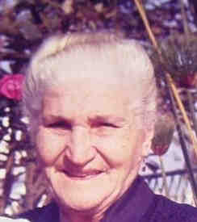
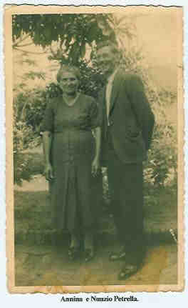
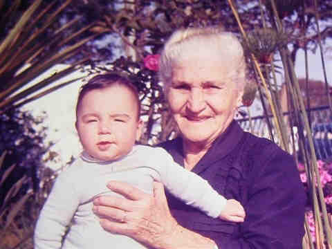
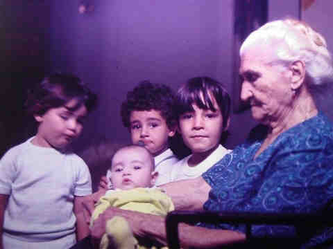

|
|
 Annina Di Bacco (1889-1973) |
Annina Di Bacco
 • fotos: Annina e Nunzio Petrella. 
(Clique na Foto para vê-la no Tamanho Original)")
• fotos: Jandira -Isabel-Lydia-Annina-Maria Helena no colo da Anita Colucci e Marianina Na terraça Nunzio e Eugenio. 
(Clique na Foto para vê-la no Tamanho Original)")
• fotos: Família de Annina e Nunzio Petrella.  • fotos: Vó Ana + Dindo.  • fotos: Marcelo_Nelsinho_Dindo_ Vó ana segurando Waltinho. Annina casad[:o::a] Nunzio Petrella, filho de Rocco Petrella e Filomena Di Bacco, em 3 Nov 1904 em Neca Junqueira, Sp. (Nunzio Petrella nasceu em em 2 Jul 1884 em Pratola Peligna , L'Aquila, Abruzzo e faleceu em 5 Jul 1962 em Brooklin, Sp.) |
 Eventos notáveis em Sua vida foram:
Eventos notáveis em Sua vida foram: